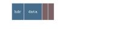
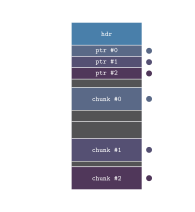

Sometime ago I wrote an article on creating generic arraylists using C macros. Because they are "the" building block of other data structures, it is impossible to overstate their value. But there is one non-trivial problem that normal arraylists can't solve -- let me show you what I mean.
Suppose we have a memory buffer like so:
And assume that our memory buffer is managed by the C library malloc. Let's initialize our arraylist:
Our memory allocator, in this case malloc, reserves a chunk of memory for bufhdr and the trailing data where our arraylist can store items into. I've color-coded this so dark grey represents allocated but unused, because we haven't pushed any items into it yet.
Now let's suppose that some other code requests malloc for a chunk of memory immediately after initializing our arraylist. The memory now looks like so:
So far so good. Now we push items into the arraylist until we hit the maximum capacity:
Uh oh! We've reached the end of our allocated space, i.e. the arraylist is at capacity. Let's walkthrough what would happen if we try to push one more element:
-
Our code checks to see if
bufcap(b) >= 1 + buflen(b). This returns false, so we call_bufgrow. -
_bufgrowcalculates the new capacity andreallocs the previously allocated space to a new location (it cannot be expanded in place due to othermalloccalls).
The memory layout finally looks like this:
Notice a "hole" in the memory at the beginning. Multiply this operation a thousand times, and you get a fragmented memory space, where free and used blocks are interleaved. Even though there is enough total memory available, the memory is discontiguous enough that any sufficiently large request of memory will inevitably fail.
A better way to manage memory allocations is by grouping them by their lifetimes. This is often called an Arena. For example, all the enemies in a particular level of a game can share an arena, and at the end of the level, that arena can be instantly deallocated without individually freeing all the enemy objects. This would free the whole arena memory, which could be reused for some other level.
But arenas do not solve our problem entirely. Sometimes we cannot predict the amount of space we'd require ahead of time resulting in frequent reallocation of data. A good example is a tokenizer. We can't really predict the length of the Token array in advance, we could only have a calculated guess based on the length of the source code etc.
Another problem arises when we increase the number of arraylists in our program. If many of them use the same arena for their allocations, then the chances of collision when a list needs to expand increases. Or the arenas themselves can collide with each other if a sufficient gap between them is not kept.
But we're getting ahead of ourselves. Let's first see how a simple bump allocator is implemented.
typedef struct { const char* name; char* base; usize capacity; usize pos; } Arena;
We define a simple 4-field type for an Arena where name is the debug name for an arena, base is the starting address, capacity is the length in bytes, and pos is the current offset into the arena.
Arena arena_create(const char* name, u64 reserve) { Arena arena = (Arena){}; arena.name = name; void* ptr = mmap(NULL, reserve, PROT_READ | PROT_WRITE, MAP_PRIVATE | MAP_ANONYMOUS | MAP_NORESERVE, -1, 0); if (ptr != MAP_FAILED) { arena.base = ptr; arena.capacity = reserve; } return arena; }
This creates an arena, taking in a name and a default size. Now we get to the interesting part. The mmap() call reserves a virtual address block (but not physical memory) of the specified size. Due to demand paging, even if the requested memory is orders of magnitude higher than the physical memory available, the kernel will not reserve any pages until a memory space is accessed. We also pass the MAP_ANONYMOUS flag because we do not need a backing storage mmaped.
void* arena_push(Arena* arena, u64 size) { u64 aligned_size = (size + 7) & ~7; assert(arena->pos + aligned_size <= arena->capacity && "Arena out of memory!"); void* ptr = arena->base + arena->pos; arena->pos += aligned_size; return ptr; }
This function is equivalent to malloc() in use, as it accepts a size to allocate as an argument and returns a pointer to the allocated space, as opposed to copying the object onto the arena itself.
void arena_clear(Arena* arena) { arena->pos = 0; } void arena_destroy(Arena* arena) { if (arena->base) { munmap(arena->base, arena->capacity); } }
These trivial functions deal with clearing and deinitializing arenas. It clears/destroys the whole arena at once, which is primarily what an arena is used for.
Our arena implementation is complete, but useless for us in this state. Why? Let me reiterate our problem statement. What we want is a collision-free way of allocating objects, where an arraylist can grow infinitely without colliding with another allocation. Some of you might think that this can be easily solved by mmaping a huge 1TB block of virtual memory and segregating that block into granular address spaces for each arraylist. Thus the kernel won't allocate physical pages if the memory space is not written to. But this presents us with some problems:
- Some embedded systems do not support demand paging, thus any allocation will commit physical RAM.
-
Even on desktop Linux (and other OSes) the overcommit behaviour depends on kernel flags like
vm.overcommit_memory, where the kernel will not let you reserve virtual address spaces exceedingswap + (ram * overcommit_ratio)if the proper value is not set. - Modern kernels use 4 or 5-level page table hierarchies, where each page table consumes 4KB. If you write a single byte to an address far into the memory space, the kernel will have to allocate intermediate page table entries (PUD, PMD, and PTE) to map the physical page.
- It puts some hard limit (depending on the granularity of division of 1TB space) on the size of arraylists. Maybe you need to store 10GB worth of stuff in one arraylist, but you won't be able to if the block size is only 1GB.
So what can we do? Let's think about it for a moment. Let's assume we allocate a default size for every arraylist, say 128 elements. Then as the arraylist fills up, the length slowly increases to eventually equal 128, wherein no further elements can be stored. Now, we make a safe assumption that we cannot extend the capacity in place (collision with other allocations), but what if we set the next free pointer to the end of the arena?

Our arraylist now becomes discontinuous i.e. the elements are allocated in chunks with unrelated allocations sitting between them. This makes pushing elements to the list trivial, but what about accessing elements from the list? Currently we have no way of knowing where the elements 128 and above are stored. They might as well be garbage memory for all the arraylist cares. Now what?
Some of you may see the solution already. What if we store the individual pointers to chunks in the header? From our previous example, when an arraylist with length 128 is pushed to again, it would store the next free arena address in its header so it'd look something like:
Chunk #0 => 0xfffdffe0c24deb70 (the "default" chunk) --> Chunk #1 => 0xfffdffe0c24ded30 (arena's next free spot)
The arraylist would tell the arena to reserve 128 elements from its current position, so the next 128 elements of the arraylist could be stored here. Also the pointers to these chunks could be stored in the header so we could access any element just by indexing into it's chunk pointer.
This brings us to a caveat of this data structure: any time you'd want to access a particular element (random access), you'd first need to find the associated chunk pointer of that element (using some bitwise math) in the table stored in the header. Then another read would be required to load the element from the chunk. This indirect memory access would cause cache locality and access times to take a hit, but would be much better at appending/deleting items from/to the list.
| Operation | Standard ArrayList | LinkedList | Chunked ArrayList |
|---|---|---|---|
| Random Access (get / set) | O(1) (fast pointer math) | O(n) (pointer traversal) | O(1) but slower compared to Standard ArrayList |
| Append | Amortized O(1) (expensive resize if full) | O(1) (fast) | O(1) (as fast as LinkedList; spawns a new chunk if full without copying over data) |
| Insert / Delete | O(n) | O(1) if pointer to element is known else O(n) | O(c) to O(n) for insertion, O(c) for deletion |
| Memory Overhead | Low | High (prev/next pointer for every element) | Little higher than Standard ArrayList (overhead per chunk not per element) |
| Cache Locality | Excellent (continuous) | Poor (elements sparsely spaced) | Good to Excellent (continuous chunks separated in memory) |
A chunked arraylist approach combines benefits of both a standard arraylist and a linked list. This novel structure is a great fit for long-running service daemons, which require minimal memory fragmentation to minimize allocation failures. By now you must be somewhat inclined to see how this works in action. Let's get to the implementation.
typedef struct { Arena* arena; void** chunks; usize cap; usize len; u32 chunkcount; u32 chunkcap; } listhdr;
Similar to an arena's header, we store some state info in the arraylist header. Note that chunks is a growable table of chunk pointers, hence the chunkcount and chunkcap, similar to an arraylist's count and capacity.
} listhdr;
listhdr* _listhdr(const void* list) { return (listhdr*)((char*)list - sizeof(listhdr)); }
Returns a pointer to the header given a list pointer. list is a pointer to the end of the header similar to stretchy buffers we implemented in the previous article, so we use pointer math to subtract the length of the header to arrive at the beginning.
return (listhdr*)((char*)list - sizeof(listhdr)); }
usize listlen(const void* list) { if (list) return _listhdr(list)->len; assert(0); return 0; } usize listcap(const void* list) { if (list) return _listhdr(list)->cap; assert(0); return 0; }
Some helper functions to get a list's length and capacity. These are defined as functions not macros, so they can be used inside a debugger.
} listhdr;
#define listinit(arena, p) ((p) = _listgrow((arena), NULL, 0, sizeof(ListType((p)))))
listhdr* _listhdr(const void* list) {
This macro is used to initialise a list. p is a pointer type indicating a list. The type is a little different compared to our stretchy buffer implementation, but we'll get to it later. Here we call _listgrow, which handles both initialisation and growing. Let's look at it next.
return 0; }
void* _listgrow(Arena* arena, const void* list, usize new_len, usize elem_size) { listhdr* hdr = list ? _listhdr(list) : NULL;
...
Pretty self-explanatory. In case of a new list as opposed to growing a list, list & new_len are NULL & 0 respectively. For elem_size notice we used sizeof(ListType(p)) earlier in listinit. Using some macro magic we can find out a list's item type without using templates or generics. We'll see how ListType is implemented later.
listhdr* hdr = list ? _listhdr(list) : NULL;
if (!hdr) { hdr = (listhdr*)arena_push(arena, sizeof(listhdr)); hdr->arena = arena; hdr->len = 0; hdr->cap = 0; hdr->chunkcap = 0; hdr->chunkcount = 0; hdr->chunks = NULL; }
...
Again pretty simple -- the if clause runs on first initialisation to allocate a header.
}
while (new_len > hdr->cap) {
...
Now the main chunk allocation loop begins. The loop allocates one chunk per cycle until the list capacity is greater than new_len requested by the user. By default we pass 0 for new_len, so at least one chunk is allocated by running the loop.
The chunk pointer table is not stored in the header, it is stored separately. Why? When we first initialise a list, we allocate a table of 4 pointers by default. But when the list needs another chunk, the pointer table must also be resized, which cannot be done in place. The easiest solution I've found is to just allocate a new table of pointers, copying the previous table and updating the header to this table. Yes we waste 8 bytes per chunk per list on table resize, but I feel this to be trivial especially if the maximum chunk capacity is moderately large. For example with 65536 elements per chunk, and chunk count doubling after the initial 4 chunks, you'd only lose 96 bytes to store a million elements.
while (new_len > hdr->cap) {
if (hdr->chunkcount >= hdr->chunkcap) { u32 oldcap = hdr->chunkcap; hdr->chunkcap = hdr->chunkcap == 0 ? 4 : hdr->chunkcap * 2; void** newchunks = arena_push(hdr->arena, hdr->chunkcap*sizeof(void*)); if (oldcap > 0) memcpy(newchunks, hdr->chunks, oldcap*sizeof(void*)); hdr->chunks = newchunks; }
...
This is the code responsible for the aforementioned pointer table allocation. We check if chunkcap less than or equal to chunkcount, and accordingly allocate a new table using our ol' friend arena_push. If the capacity is non-zero, we copy over the previous table using memcpy.
}
hdr->cap += LIST_CHUNK_SIZE;
hdr->chunks[hdr->chunkcount] = arena_push(hdr->arena, LIST_CHUNK_SIZE * elem_size);
hdr->chunkcount++;
}
return (void*)((char*)hdr + sizeof(listhdr));
}
The actual chunk allocation. We increase the list capacity and allocate a chunk, adding it to our pointer table. Let's also define LIST_CHUNK_SIZE somewhere:
#define LIST_CHUNK_SHIFT 16 #define LIST_CHUNK_SIZE (1ULL << LIST_CHUNK_SHIFT) #define LIST_CHUNK_MASK (LIST_CHUNK_SIZE - 1)
typedef struct {
Why do we use bit-shifting and masking to define the chunk size? To answer this question, we'll need to look at how elements are accessed in this chunked-list architecture.
We cannot access elements using the [] because our list is not contiguous. To access an element at a particular index, we first need to find the corresponding chunk in which it's stored. We use our handy table of pointers for this. For example, if our element is stored at index 70384, we know it's stored in the second chunk because the first chunk ends at index 65535. To make this math fast on a CPU, instead of division we use bit-shifting and masking.
Instead of treating the array index as an index into contiguous memory, we split the index in two:

On 64-bit systems, the chunk index can store 48 bits, but you'll rarely need to use more than a few bits of it. The 16-bit element index is then used to []-index into a chunk to finally retrieve the element.
Because we use bit-operations to calculate the chunk and element indices, chunk size has to be a power-of-2 (in our case \(2^{16}\) or 65536). That way we won't have to resort to the slower division method which is really expensive for an operation which needs to happen millions of times a second.
#define listinit(arena, p) ((p) = _listgrow((arena), NULL, 0, sizeof(ListType((p)))))
#define listget(p, i) (((ListType((p))*)(_listhdr((p))->chunks[(i) >> LIST_CHUNK_SHIFT]))[(i) & LIST_CHUNK_MASK])
listhdr* _listhdr(const void* list) {
